La vie en rose Fushia
Broderie FSL, une dentelle autoportante, et finitions entièrement au fil, à la main : 3h30 de minutie.
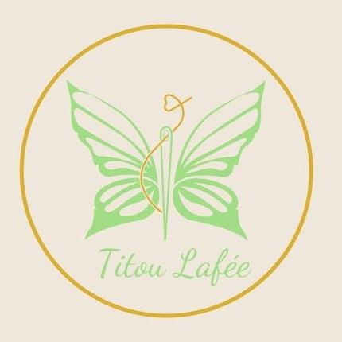
Boutique artisanaleCréations éco-responsables cousues main, broderies personnalisées et bijoux brodés légers : boucles d’oreilles, colliers et bracelets sur commande.
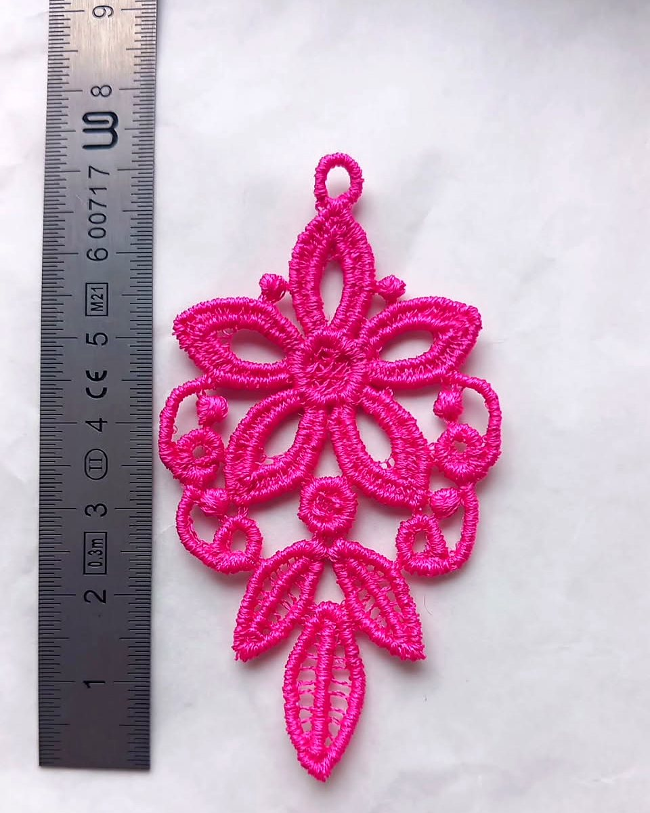
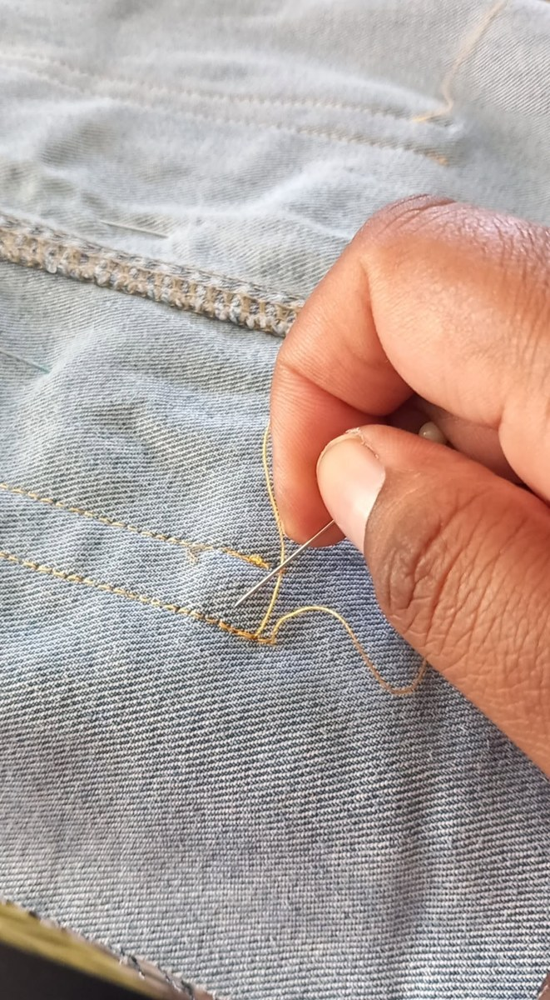
Derrière une boucle d’oreille
« Ce n’est pas juste un bijou. C’est une histoire qu’on porte sur soi. »Titou La Fée, publication du 24 septembre 2026
Les bijoux brodés
Chaque pièce est unique. Les dernières nées : Noir Volcan, sobre et intense, et Trio Volcanik en rouge, noir et jaune, « pour celles qui n’ont pas peur d’oser ».
Broderie FSL, une dentelle autoportante, et finitions entièrement au fil, à la main : 3h30 de minutie.
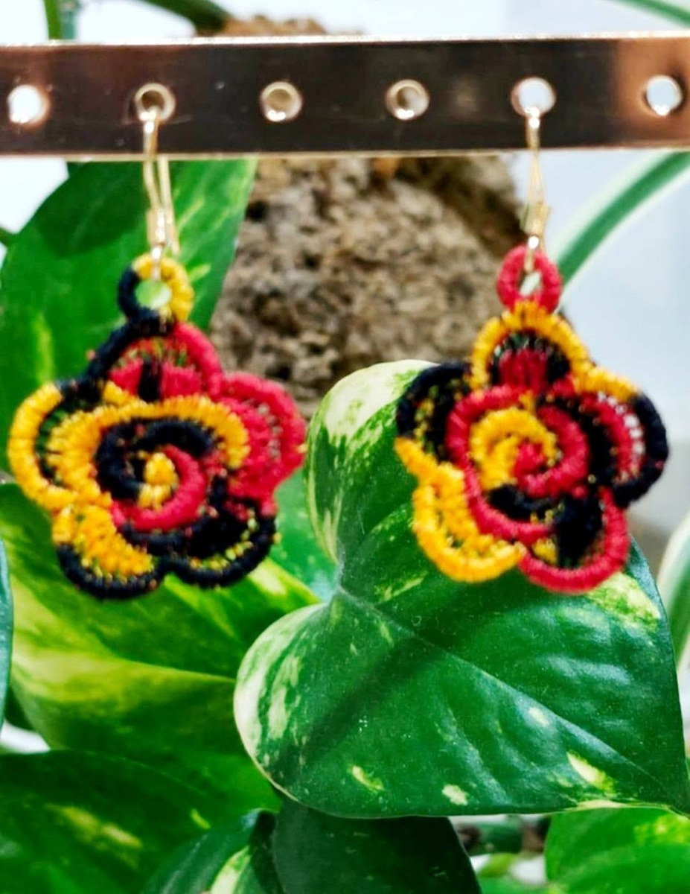
Des fleurs en spirale aux couleurs du volcan, pour oser la couleur.
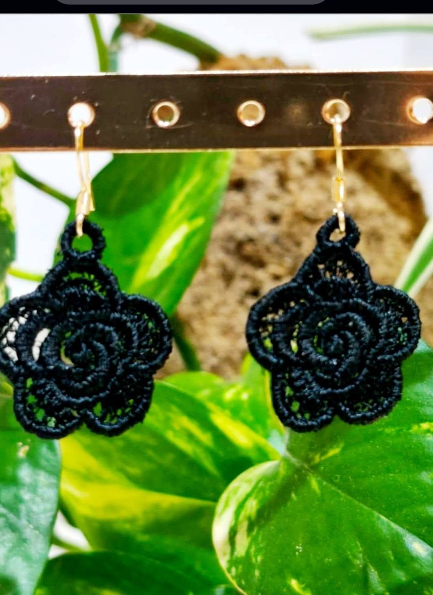
Une dentelle de fil noire, sobre et intense, qui s’accorde à tout.
Cousu main, éco-responsable
Chouchous, carrés lavables, sacs et pochettes, coffrets, broderies personnalisées : des articles éthiques fabriqués à La Réunion.
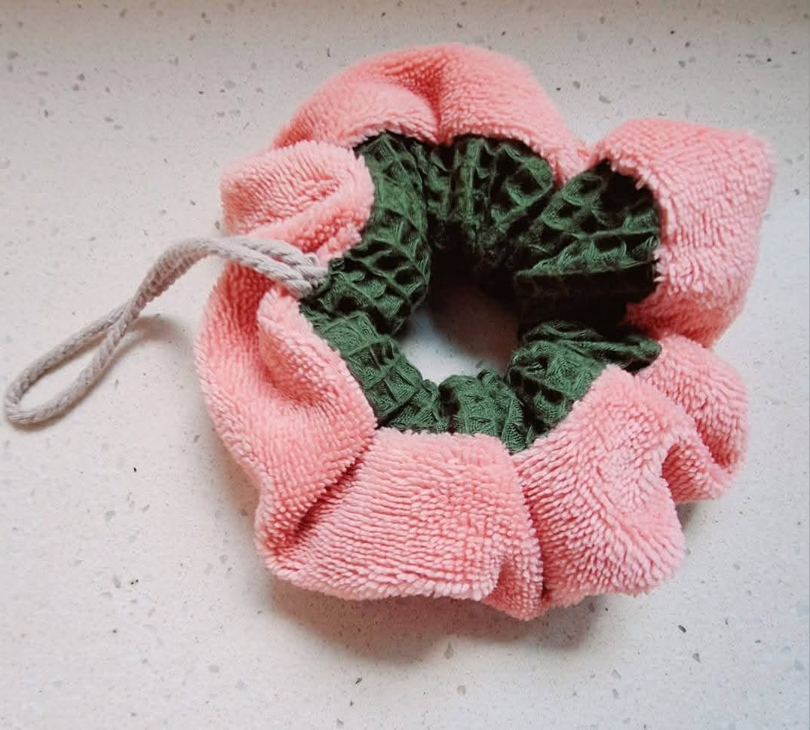
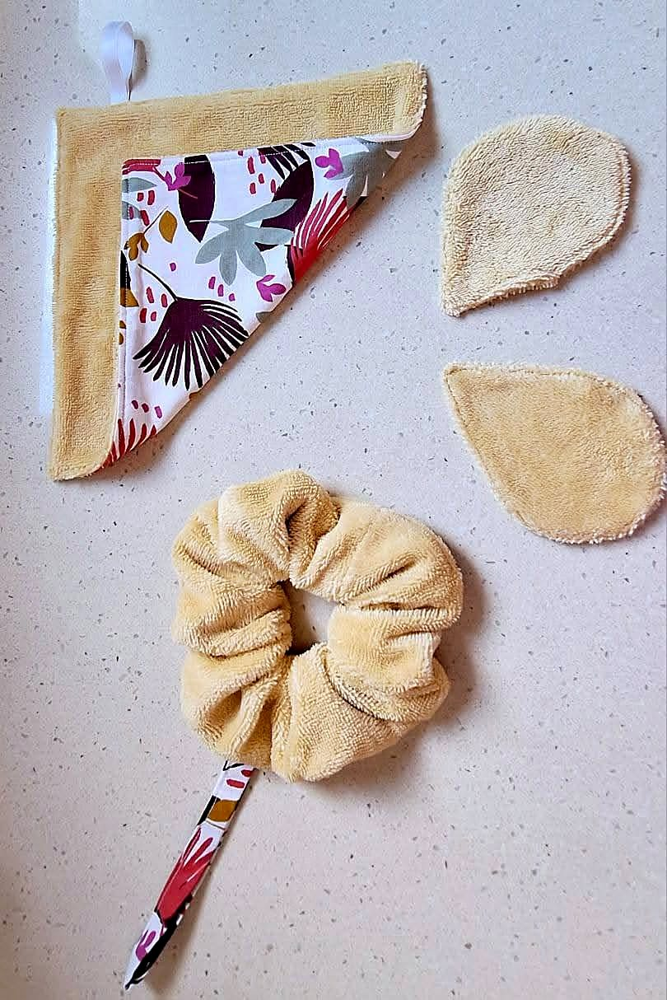
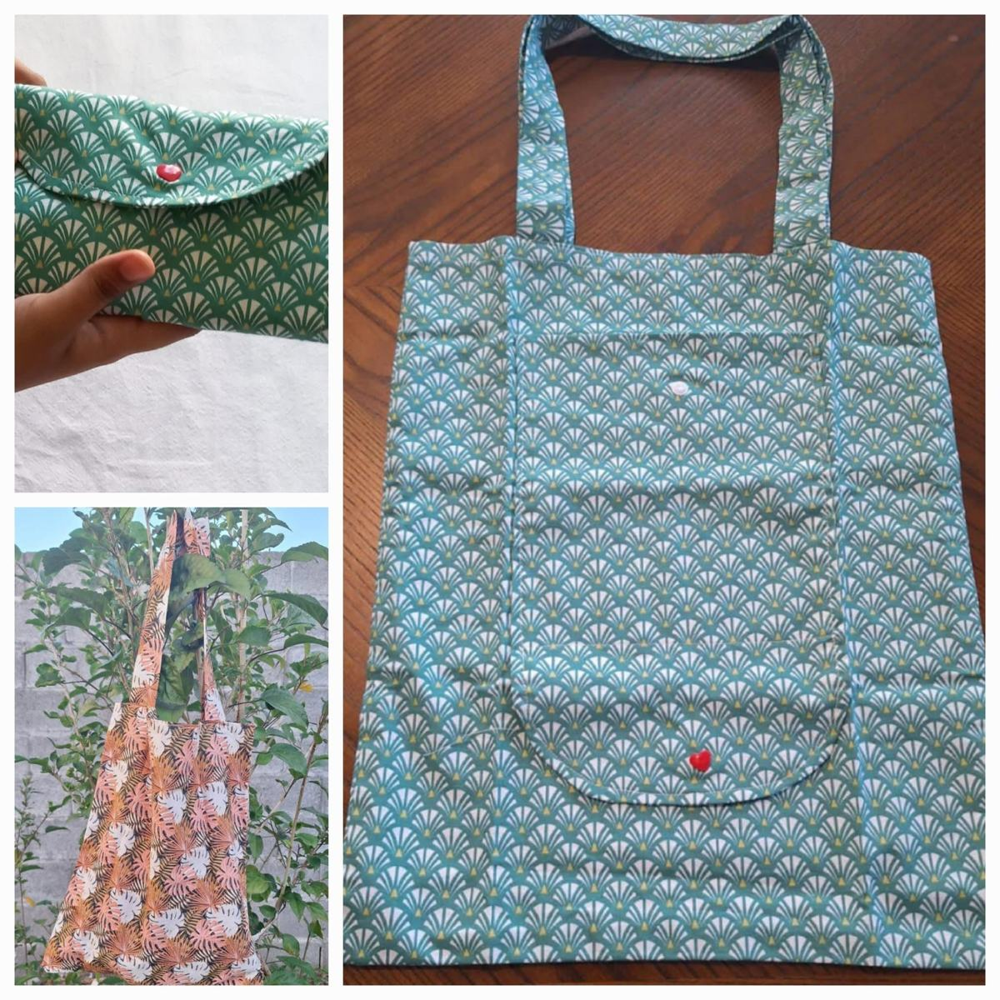
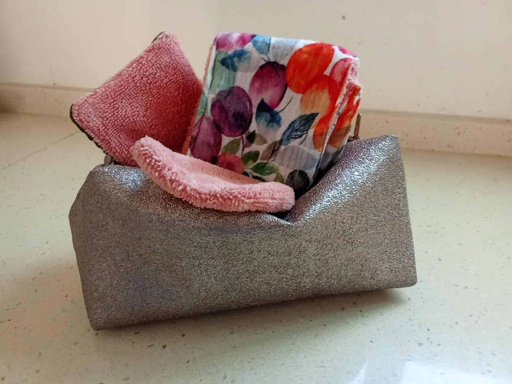
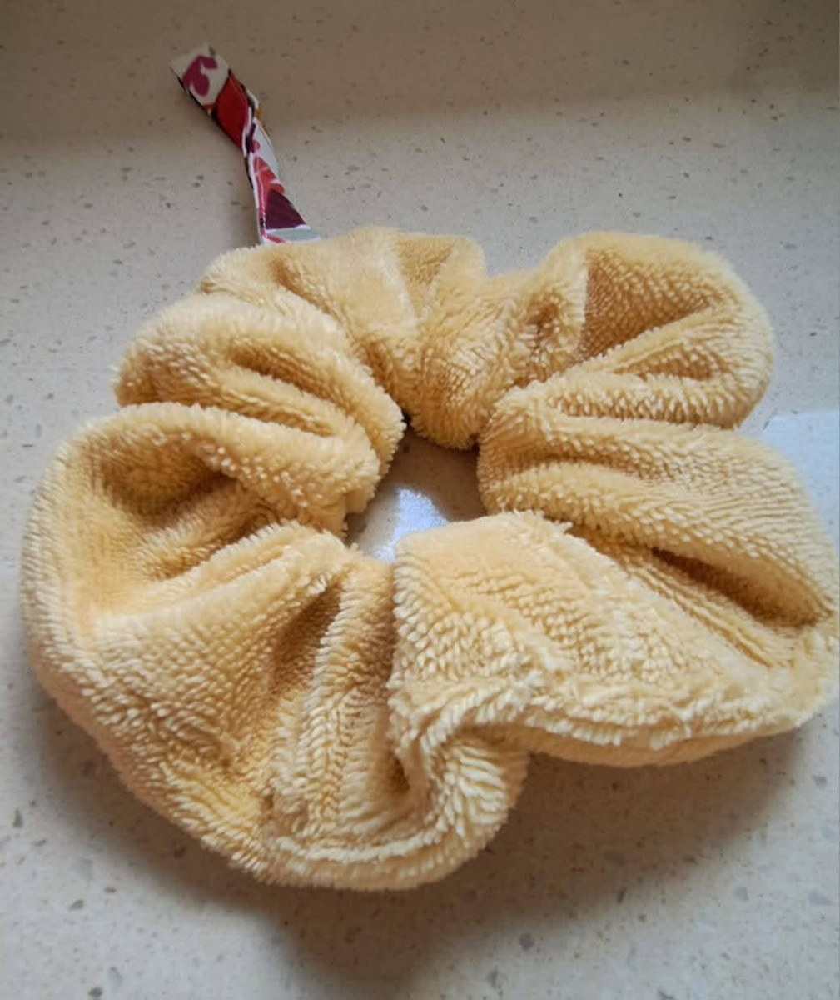
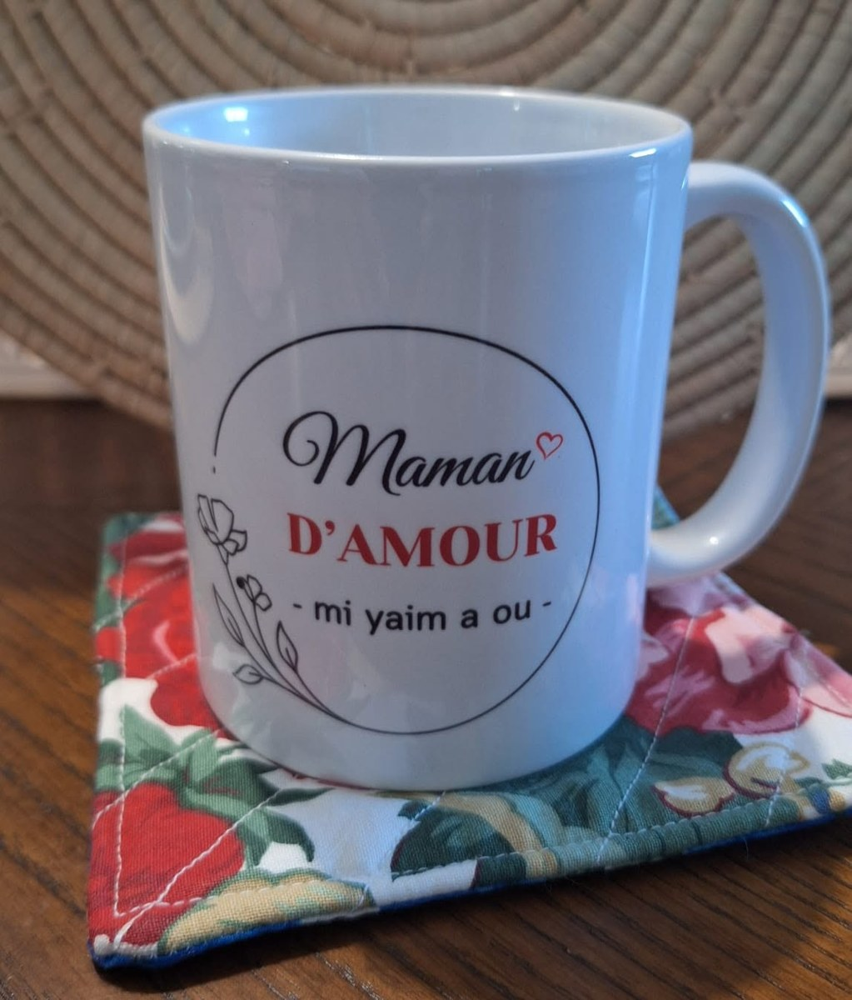
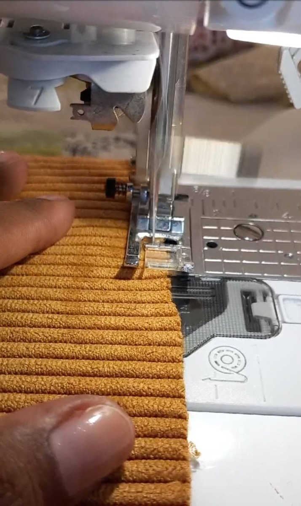
Faites glisser pour voir la suite →
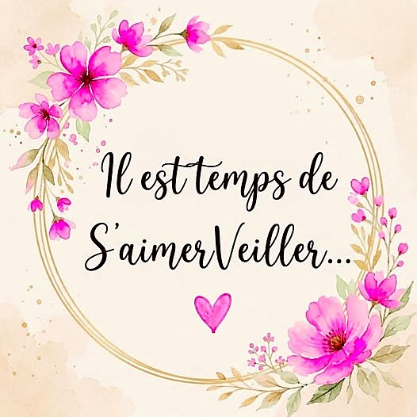
L’esprit de la fée
« S’aimerveiller du monde qui nous entoure, ce n’est pas être naïf. C’est un acte de résistance face à la morosité. C’est choisir de se nourrir de la beauté là où elle se trouve. »
Sur sa page, Titou La Fée partage aussi ces petits rituels de douceur : un café bu assis, un livre, ses chansons préférées, dix minutes par jour pour soi.
Sur commande
Choisissez la pièce, la couleur et la finition : votre demande part toute prête sur WhatsApp, et la fée s’occupe du reste.
Boutique artisanale
Saint-Benoît 97470, La Réunion
Du lundi au samedi, 9h–17h
Sur les salons : Titou La Fée retrouve aussi ses clientes sur les marchés d’artisans péi, comme Talent Péi avec Oté Z’Artisans au Centre commercial E.Leclerc La Réserve, au printemps 2026.